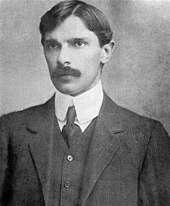
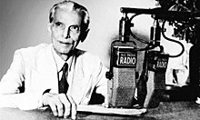
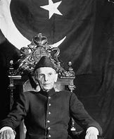
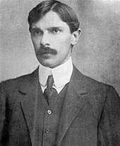
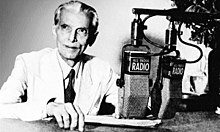
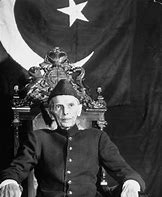
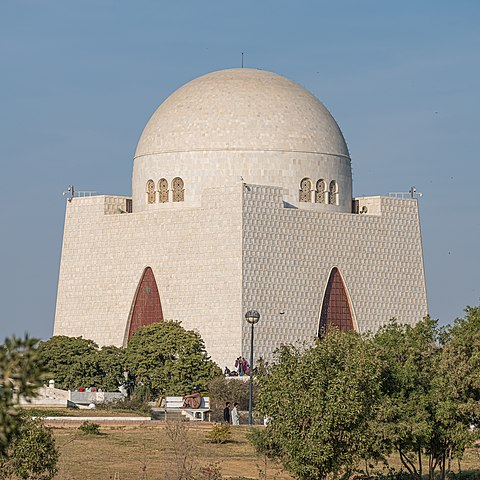

Muhammad Ali jinnah:-
(Founder of our nation)
 


Muhammad Ali Jinnah was the founder of Pakistan and its first Governor-General. His real name was Muhammad Iqbal, but he was given the title "Quaid-e-Azam," which means "Great Leader." Jinnah received his education in Bombay and London, becoming a distinguished lawyer. His role in the creation of Pakistan is of immense significance, as he laid the foundation for a separate homeland for Muslims and led them through his leadership and determination to achieve this goal.



Muhammad Ali Jinnah was the founder of Pakistan and its first Governor-General. His real name was Muhammad Iqbal, but he was given the title "Quaid-e-Azam," which means "Great Leader." Jinnah received his education in Bombay and London, becoming a distinguished lawyer. His role in the creation of Pakistan is of immense significance, as he laid the foundation for a separate homeland for Muslims and led them through his leadership and determination to achieve this goal.
Jinnah's political vision was to understand and resolve the Hindu-Muslim conflict. For the last decade of his life, he dedicated himself to Pakistan, leading the Muslim League and guiding them towards the realization of a new nation. In 1940, in the Lahore Resolution, he formally demanded the creation of Pakistan, and thereafter worked tirelessly to bring this vision to reality.
During his leadership, Quaid-e-Azam worked to establish a strong and just government. Until his last days, he focused on developing Pakistan’s fundamental frameworks, such as the constitution and democratic practices. His vision was for Pakistan to be a nation where every individual would have the right to self-determination and equality. Quaid-e-Azam passed away on 11th September 1948, leaving Pakistan without its great leader, but his legacy and his work continue to inspire the nation.
Date of Birth :-
- Jinnah born in 25 December 1876 (Born at Wazir Mansion in Karachi).
Date of Death :-
- Jinnah died in 11 September 1948 at the (aged of 71) at Karachi, Federal Capital Territory, Pakistan.
Education :-
- He got his primary education from Karachi and passed Matriculation examination at the age of 15 years.
- In Karachi, he attended the Sindh Madressatul Islam and the Christian Missionary Society High School.
He gained his matriculation from Bombay University at the high school..
Profession :-
- Jinnah is by profession Barrister - politician. but also he is a (Founder of Pakistan)
Jinnah's Family :-
- Jinnah's father name is Jinnah Poonja.
- Jinnah's mother name is Mithibai.
Mazar-e-Quaid :-

Jinnah's Siblings :-
- Muhammad Ali Jinnah
- Ahmed Ali Jinnah
- Bunde Ali Jinnah
- Rahmat Bai Jinnah
- Shireen Bai Jinnah
- Shireen Bai Jinnah
- Fatima Jinnah
- Maryam Bai Jinnah
IF YOU WANT TO KNOW MORE ABOUT MUHAMMAD ALI JINNAH THEN CLICK HERE:
wikipedia